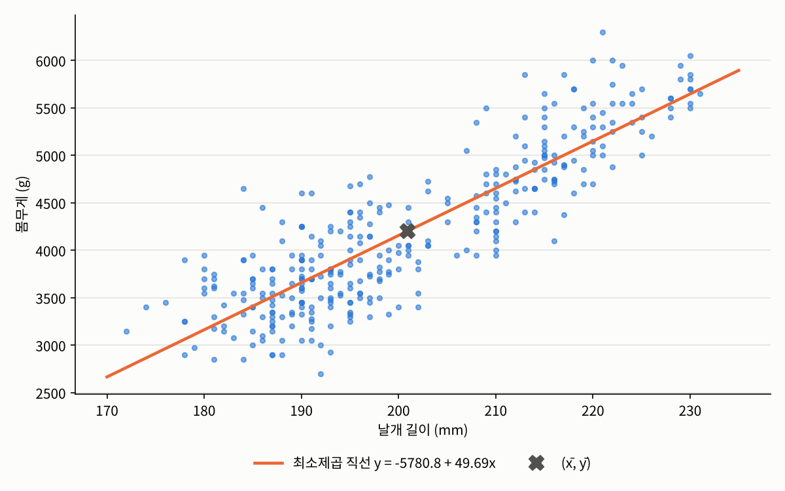
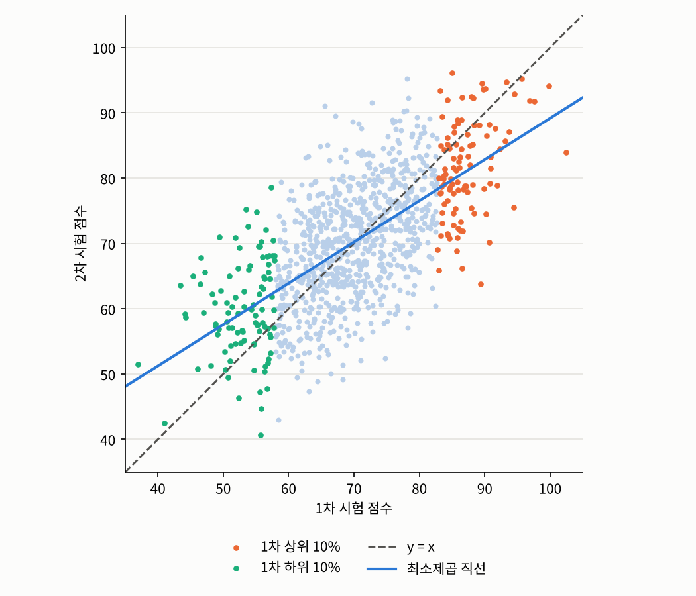

4.5 최소제곱 직선
4장 두 변수 사이의 관계 · 관계를 직선 하나로 요약하기
들어가며
4.2에서 펭귄의 날개 길이와 몸무게 사이에 상관계수 0.871의 강한 양의 관계가 있다는 것을 보았습니다. 이번 글에서는 이 관계를 쓰는 방법을 다룹니다. 날개 길이가 200mm인 펭귄을 새로 발견했다면, 몸무게를 얼마로 짐작해야 할까요?
산점도의 점들이 직선 주위에 모여 있으니, 그 점들을 가장 잘 대표하는 직선을 하나 그어서 읽으면 될 것입니다. 이번 글에서는 “가장 잘 대표한다”는 말을 정확히 정의해 최소제곱 직선을 구하고, 그 직선이 데이터를 얼마나 잘 설명하는지를 나타내는 결정계수를 살펴본 뒤, 이 직선에 숨어 있는 흥미로운 현상인 평균으로의 회귀를 다루겠습니다. 이번 글은 기초 선형 모델의 회귀 분석으로 가는 맛보기입니다.
가장 잘 맞는 직선이란
직선 \(y = a + bx\)를 하나 정하면, 각 펭귄의 날개 길이 \(x_i\)에서 직선이 예측하는 몸무게는 \(a + bx_i\)입니다. 실제 몸무게 \(y_i\)와의 차이
\[e_i := y_i - (a + b x_i)\]
를 잔차(residual)라고 합니다. 산점도에서 각 점과 직선 사이의 세로 거리입니다. 좋은 직선이라면 잔차들이 전체적으로 작아야 할 것입니다.
3.2에서 편차를 다룰 때와 같은 문제가 있습니다. 잔차에는 양수도 있고 음수도 있어서 그냥 더하면 상쇄됩니다. 그래서 여기서도 제곱해서 더합니다.
이 방법을 최소제곱법(method of least squares)이라고 부르며, 19세기 초 르장드르와 가우스가 천문 관측 자료를 다루며 발전시킨 것으로 알려져 있습니다. 정리 3.1.4에서 평균이 “제곱 거리의 합을 가장 작게 만드는 점”이었던 것을 떠올려 보면, 최소제곱 직선은 평균의 아이디어를 점에서 직선으로 넓힌 것입니다.
기울기와 절편 구하기
다행히 최소제곱 직선은 깔끔한 공식으로 구할 수 있습니다.
공식에서 바로 읽을 수 있는 사실들이 있습니다.
- 절편의 식 \(\hat{a} = \bar{y} - \hat{b}\bar{x}\)를 다시 쓰면 \(\bar{y} = \hat{a} + \hat{b}\bar{x}\)입니다. 최소제곱 직선은 항상 두 평균의 점 \((\bar{x}, \bar{y})\)를 지납니다.
- 기울기의 부호는 상관계수의 부호와 같습니다. 양의 상관이면 오른쪽 위로, 음의 상관이면 오른쪽 아래로 기웁니다.
- 잔차의 합은 항상 0입니다. 증명에서 \(a = \bar{w}\)로 정했으니 \(\sum (w_i - \bar{w}) = 0\)이고, 이것이 바로 잔차의 합입니다.
날개 길이로 몸무게 예측하기
펭귄 데이터로 직접 계산해 보겠습니다.
import numpy as np
import seaborn as sns
penguins = sns.load_dataset("penguins").dropna(subset=["flipper_length_mm", "body_mass_g"])
x = penguins["flipper_length_mm"].to_numpy()
y = penguins["body_mass_g"].to_numpy()
r = np.corrcoef(x, y)[0, 1]
b = r * y.std(ddof=1) / x.std(ddof=1) # 기울기
a = y.mean() - b * x.mean() # 절편
residuals = y - (a + b * x)
print(f"기울기 b = {b:.2f} g/mm, 절편 a = {a:.1f} g")
print(f"np.polyfit로 확인 : {np.polyfit(x, y, deg=1).round(2)}")
print(f"잔차의 합 : {residuals.sum():.6f}")
print(f"날개 200mm의 예측값: {a + b * 200:.1f} g")
print(f"r^2 : {r ** 2:.3f}")
print(f"1 - 잔차 제곱합/전체 제곱합: {1 - np.sum(residuals ** 2) / np.sum((y - y.mean()) ** 2):.3f}")기울기 b = 49.69 g/mm, 절편 a = -5780.8 g
np.polyfit로 확인 : [ 49.69 -5780.83]
잔차의 합 : -0.000000
날개 200mm의 예측값: 4156.3 g
r^2 : 0.759
1 - 잔차 제곱합/전체 제곱합: 0.759(잔차의 합이 \(-0.000000\)으로 나온 것은 컴퓨터의 소수 계산에서 생기는 아주 작은 오차 때문이고, 이론적으로는 정확히 0입니다.)

최소제곱 직선은 \(\text{몸무게} \approx -5780.8 + 49.69 \times \text{날개 길이}\)입니다. 날개 길이가 200mm인 펭귄의 몸무게는 약 4156g으로 예측됩니다.
기울기는 “날개 길이가 1mm 긴 펭귄은 평균적으로 몸무게가 약 49.7g 더 나간다”고 읽습니다. 여기서 “평균적으로”가 중요합니다. 이 데이터에서 관찰한 경향일 뿐, 어떤 펭귄의 날개를 1mm 늘이면 몸무게가 49.7g 늘어난다는 인과적인 뜻이 아닙니다. 4.4의 교훈이 여기서도 그대로 적용됩니다. 실제로 이 데이터에는 종이 섞여 있어서, 이 기울기의 상당 부분은 “젠투펭귄은 날개도 길고 몸도 무겁다”는 종 사이의 차이를 반영합니다.
절편 \(-5780.8\)g은 “날개 길이가 0mm인 펭귄의 몸무게”인데, 그런 펭귄은 없고 몸무게가 음수일 수도 없습니다. 데이터의 날개 길이는 172mm에서 231mm 사이에만 있으므로, 그 범위를 한참 벗어난 곳에서 직선을 읽으면 엉뚱한 답이 나옵니다. 데이터 범위 밖에서 예측하는 것을 외삽(extrapolation)이라고 하며, 늘 조심해야 합니다.
직선은 얼마나 잘 맞을까요? 결정계수
직선이 데이터를 얼마나 잘 설명하는지 숫자로 나타내 보겠습니다. 날개 길이를 모른다면 몸무게를 예측하는 가장 좋은 방법은 평균 \(\bar{y}\)를 말하는 것이고, 그때의 오차는 \(\sum (y_i - \bar{y})^2\)입니다. 날개 길이를 알고 직선을 쓰면 오차가 잔차 제곱합 \(\sum e_i^2\)로 줄어듭니다. 줄어든 비율을 보면 직선이 얼마나 도움이 되었는지 알 수 있습니다.
결정계수는 “\(y\)의 전체 변동 중 직선으로 설명되는 부분의 비율”로 읽습니다. 그리고 직선 하나만 쓰는 경우에는 놀랍도록 간단한 관계가 있습니다.
펭귄 데이터에서 \(r = 0.871\)이므로 \(R^2 = 0.759\)이고, 위 코드에서 두 방법으로 계산한 값이 같은 것을 확인할 수 있습니다. 몸무게의 변동 중 약 76%가 날개 길이와의 직선 관계로 설명된다는 뜻입니다. 이 정리는 상관계수의 크기에 대한 또 다른 감각도 줍니다. \(r = 0.5\)이면 \(R^2 = 0.25\)로, 변동의 4분의 1만 설명됩니다. 상관계수 0.5는 생각보다 약한 관계입니다.
평균으로의 회귀
최소제곱 직선을 표준화된 형태로 쓰면 흥미로운 사실이 드러납니다. 정리 4.5.2의 직선 \(\hat{y} = \bar{y} + r\,\frac{s_y}{s_x}(x - \bar{x})\)를 정리하면
\[\frac{\hat{y} - \bar{y}}{s_y} = r \cdot \frac{x - \bar{x}}{s_x}\]
입니다. 즉 예측값의 z-점수는 \(x\)의 z-점수에 \(r\)을 곱한 것입니다. 완벽한 직선 관계(\(|r| = 1\))가 아니라면 \(|r| < 1\)이므로, 평균에서 표준편차 2개만큼 떨어진 \(x\)에 대해 직선은 \(y\)를 평균에서 표준편차 \(2|r|\)개만큼만, 즉 평균에 더 가깝게 예측합니다.
이 현상을 처음 체계적으로 보고한 사람은 19세기 영국의 프랜시스 골턴(Francis Galton)입니다. 그는 부모와 자녀의 키를 조사해, 키가 아주 큰 부모의 자녀는 평균보다 크기는 하지만 부모만큼 크지는 않고, 키가 아주 작은 부모의 자녀는 부모만큼 작지는 않다는 것을 발견했습니다.1 골턴은 이것을 평균으로 “되돌아간다”는 뜻에서 평균으로의 회귀(regression toward the mean)라고 불렀고, 오늘날 직선을 맞추는 일을 회귀(regression)라고 부르는 이름이 여기서 나왔습니다.
평균으로의 회귀는 키에만 있는 일이 아닙니다. 가상의 시험 데이터로 확인해 보겠습니다. 학생마다 실제 실력이 있고, 시험 점수는 실력에 그날의 운이 더해져 정해진다고 하겠습니다. 같은 학생들이 두 번 시험을 봅니다.
import numpy as np
rng = np.random.default_rng(1557)
n = 1000
ability = rng.normal(70, 8, size=n) # 학생마다의 실제 실력 (관찰되지 않음)
test1 = ability + rng.normal(0, 6, size=n) # 1차 시험 = 실력 + 그날의 운
test2 = ability + rng.normal(0, 6, size=n) # 2차 시험 = 실력 + 다른 날의 운
top = test1 >= np.quantile(test1, 0.9) # 1차 시험 상위 10%
bottom = test1 <= np.quantile(test1, 0.1) # 1차 시험 하위 10%
print(f"두 시험의 상관계수: {np.corrcoef(test1, test2)[0, 1]:.3f}")
print(f"상위 10%: 1차 평균 {test1[top].mean():.1f} → 2차 평균 {test2[top].mean():.1f}")
print(f"하위 10%: 1차 평균 {test1[bottom].mean():.1f} → 2차 평균 {test2[bottom].mean():.1f}")
print(f"전체 : 1차 평균 {test1.mean():.1f} → 2차 평균 {test2.mean():.1f}")두 시험의 상관계수: 0.644
상위 10%: 1차 평균 87.3 → 2차 평균 81.5
하위 10%: 1차 평균 53.0 → 2차 평균 60.0
전체 : 1차 평균 70.1 → 2차 평균 70.2
두 시험 모두 전체 평균은 약 70점으로 같고, 실력도 바뀌지 않았습니다. 그런데 1차 시험의 상위 10%는 2차 시험에서 평균 87.3점에서 81.5점으로 떨어졌고, 하위 10%는 53.0점에서 60.0점으로 올랐습니다.
이유는 운에 있습니다. 1차 시험에서 상위 10%에 든 학생들은 실력도 좋았겠지만, 평균적으로 그날 운도 좋았던 학생들입니다. 2차 시험에서는 운이 새로 정해지니, 좋았던 운이 평범하게 돌아오면서 점수가 평균 쪽으로 내려옵니다. 하위 10%는 반대입니다. 그림에서 최소제곱 직선이 \(y = x\)보다 완만한 것이 바로 이 현상입니다.
평균으로의 회귀를 모르면 엉뚱한 결론을 내리기 쉽습니다. 성적이 가장 나빴던 학생들에게 특별 보충 수업을 했더니 다음 시험에서 점수가 올랐다면, 그것이 보충 수업의 효과인지 그냥 평균으로의 회귀인지 구분해야 합니다. 위 시뮬레이션에서는 아무것도 하지 않았는데도 하위 10%의 점수가 7점이나 올랐습니다. 이것을 구분하려면 1.3에서 본 것처럼 보충 수업을 받지 않은 비교 집단이 필요합니다.
다음 단계
이번 글의 최소제곱 직선은 회귀 분석의 가장 단순한 형태입니다. 기초 선형 모델에서는 이를 여러 가지 방향으로 확장합니다. 설명 변수를 여러 개 쓰고(예: 날개 길이와 종을 함께 써서 몸무게 예측하기), 잔차를 확률적으로 모형화하고, 기울기가 정말 0이 아닌지를 추론 통계의 방법으로 판단합니다. 마지막 질문은 이 과목의 6~8장에서 배울 도구들이 필요합니다.
정리
이번 글에서는 두 변수의 관계를 직선으로 요약하는 방법을 다루었습니다.
- 최소제곱 직선은 잔차의 제곱합을 가장 작게 만드는 직선입니다. 기울기는 \(\hat{b} = s_{xy}/s_x^2 = r\, s_y/s_x\), 절편은 \(\hat{a} = \bar{y} - \hat{b}\bar{x}\)이며, 직선은 항상 \((\bar{x}, \bar{y})\)를 지납니다.
- 기울기는 평균적인 경향을 나타낼 뿐 인과를 뜻하지 않으며, 데이터 범위 밖에서 직선을 읽는 외삽은 조심해야 합니다.
- 결정계수 \(R^2\)는 \(y\)의 변동 중 직선으로 설명되는 비율이고, 최소제곱 직선에서는 \(R^2 = r^2\)입니다.
- 예측값의 z-점수는 \(x\)의 z-점수에 \(r\)을 곱한 것이므로, 극단적인 값은 다음에 평균 쪽으로 돌아오는 경향이 있습니다. 이 평균으로의 회귀를 처치의 효과로 착각하지 않도록 주의해야 합니다.
2장부터 4장까지 기술 통계를 마쳤습니다. 우리는 손에 쥔 데이터를 표와 그림과 숫자로 정리하는 방법을 익혔습니다. 그런데 처음부터 하던 이야기를 다시 떠올려 보면, 이 데이터는 우연이 만든 결과 중 하나였습니다. 표본 평균, 상관계수, 회귀 직선의 기울기 모두 다른 표본을 뽑았다면 조금씩 달랐을 것입니다. 그 “조금씩 다름”을 다루려면 확률의 언어가 필요합니다. 5장에서는 지금까지의 상대도수와 히스토그램을 확률과 확률분포로 이어, 추론 통계로 넘어갈 다리를 놓겠습니다.
연결되는 개념
- \(\leftarrow\) 이전 개념: 4.4 상관과 인과, 심슨의 역설
- \(\rightarrow\) 다음 개념: 5 데이터에서 확률 모형으로 (추후 작성 예정)
Footnotes
F. Galton, “Regression Towards Mediocrity in Hereditary Stature”, The Journal of the Anthropological Institute of Great Britain and Ireland 15, 1886, pp. 246–263.↩︎